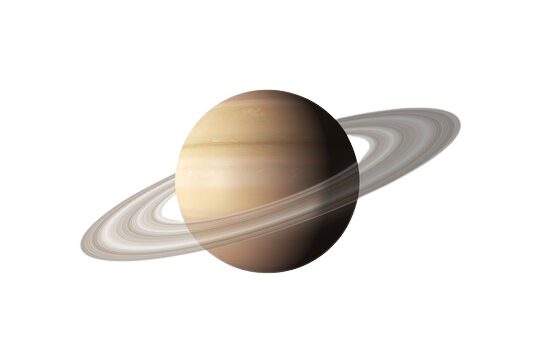
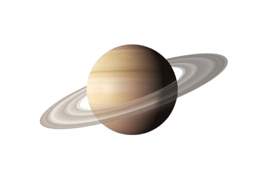

Saturn
- distanța de la soare:
1.427 de milioane km - Lungimea zilei:
10h 14m - Lungimea anului:
10.756 zile pământești (29,4 ani pământeni) - Accelerație gravitațională:
10.44 m/s² - Raza:
60400 km - Densitatea:
700 kg/m3 - Masa:
95.2 Mase terestre
Discută despre stele, planete și ce este după ele
 

Pentru a vedea diferenta de dimensiuni dintre soare si planeta misca cursorul pe soare.
• Temperatură: Aprox. -145°C (în atmosferă)
• Temperatură: Aprox. -178°C (în atmosferă)
• Inele: Da, cele mai impresionante din sistemul solar, formate din gheață și particule de rocă.
• Sateliti: Peste 80 de sateliți naturali cunoscuți. Cei mai importanți sunt: Titan, Enceladus. Rhea, Iapetus, Dione, Tethys, Mimas
•Tipul de planeta: gigant gazos
•Este uneori numită „Bijuteria Sistemului Solar” cu inelele sale vizibile și dimensiunile mari, a doua după Jupiter.
•Saturn este cea mai puțin densă planetă din sistemul solar.
•Se spune că atunci când Galileo a privit spre Saturn cu o versiune timpurie a telescopului în 1610, el a crezut că inelele sale erau două luni lipite de părțile laterale ale planetei.
Cea mai îndepărtată planetă vizibilă cu ochiul liber, Saturn a fost numit după zeul roman al agriculturii. Mișcările lente ale planetei le-au reamintit probabil vechilor observatori ai cerului mersul lent al boilor care arat sau al vitelor la pășunat. Acest tablou intrigant îl arată pe Saturn odihnindu-se liniștit cu un tăietor de grâu în mână, precum și semnul astrologic care simbolizează răbdarea și autodisciplina.